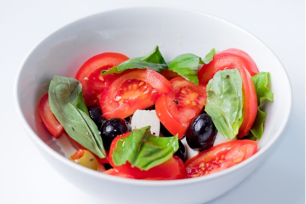

Caprese

Elegant caprese with basil, balsalmic vinegar and olives
Try this decadent, yet simple, caprese recipe for your next event. This is such a quick recipe to whip up,
that you can always make it fresh and it can be added to any meal to compliment as an appetizer.
Ingredients:
- Ripe vine-rippened or roma tomatoes
- Fresh mozzerella log for slicing
- balsalmic vinegar or (preferably) balsalmic glaze
- EVOO
- Fresh basil leaves
- Course salt
- Olives (optional)
Preparation:
- First slice tomatoes to your desired thickness, I prefer thicker slices that are comparable in size to the
mozzerella slices.
- Next, chiffonade basil.
- If mozzerella is not pre-cut, then slice mozzerella to desired thickness.
- On a platter or shallow serving dish, lay out the sliced tomoatoes and mozzerella, alternating them to
create a pattern.
- Now, toss course salt over the top of the sliced tomatoes and mozz. Make sure to add enough to have each
piece with salt.
- Next, evenly spread the chiffonade basil across the slices and make sure it is evenly distributed.
- Lastly, drizzle lightly with balsalmic vinegar and EVOO. If using balsalmic glaze, first drizzle with EVOO,
then apply glaze in long lines across the tiop to create a beautiful pattern.
- Enjoy as is or with crachers of your choosing.